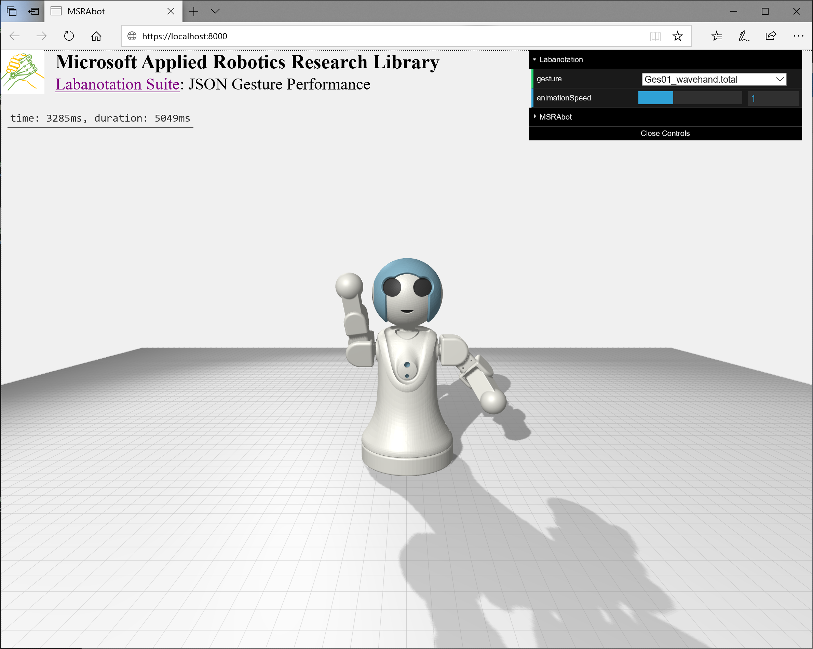
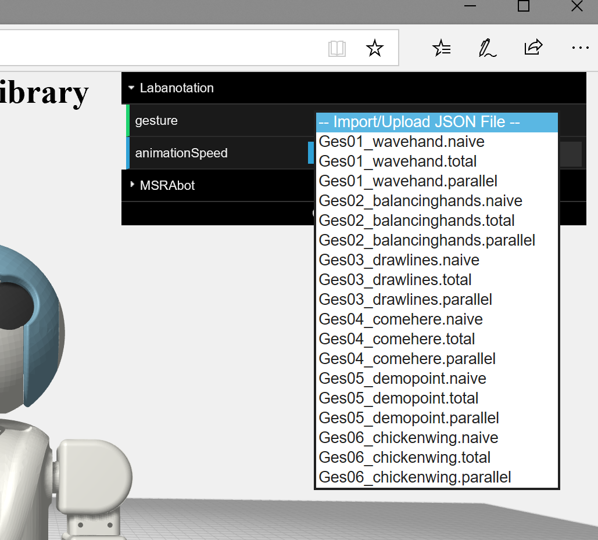
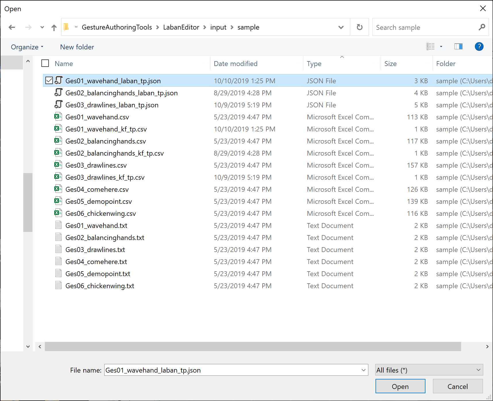
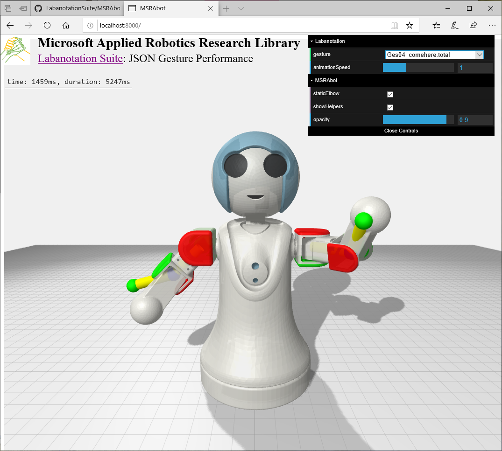

Microsoft Applied Robotics Research Library
Microsoft Applied Robotics Research Library
Open Source Samples for Service Robotics

MSRAbot Simulation Software
Description
The MSRAbot Simulation Software uses javascript and html code to implement an animated 3D model of the robot and a user interface for selecting and rendering gestures described in the JSON format. A temporary local HTTP server invoked with python or an existing server can be used to host the software and the simulation is run within a modern web browser. The user can choose from a collection of sample gestures, or select a new gesture captured and created using this project's Gesture Authoring Tools.
Tested System Software
- Microsoft Windows 10, 64-bit
- Microsoft Edge Web Browser (https://www.microsoft.com/en-us/edge/)
- Python 2.7.10 (https://www.python.org/downloads/release/python-2710/)
Installation
Copy the entire MSRAbotSimulation folder into a convenient folder on your local computer.
Note: If you are already running or have access to an HTTP server, you can copy this folder into that server's file tree.
Starting Up
- Open a command prompt or terminal session with access to your python installation
- Navigate to the MSRAbotSimulation folder containing the file index.html
- Run the following command (for python 2.3):
> python -m SimpleHTTPServer
Note: If you are running python version 3 or higher, run this command:
> python3 -m http.server
- Open your favorite browser and open the URL http://localhost:8000
Note: If you have installed the folder into an existing HTTP server, you do not need to run the previous python commands but will need to adjust the URL for that particular server. For example: http://[your_server_name/your_installation_path]/MSRAbotSimulation/index.html
Viewing Gestures
Animated gestures are viewed in the browser by selecting and loading JSON files. View angle, panning, and zoom are available by clicking and holding mouse buttons and scroll wheels within the scene. Animation speed can be adjusted with a slider bar in the upper-right control panel.

Select a Gesture
Changing the gesture to be viewed is performed by selecting the drop-down text box in the upper-right corner of the browser screen. A selection of sample gestures are available, as well as an ability to load a newly created gesture stored on the local computer.
In addition to the six gestures, the sample files contain examples of the three keyframe extraction methods (naive, total, and parallel) available for processing in the LabanEditor gesture authoring tool included in this suite.

Select a Local Gesture File
New gesture files created by the user can be viewed by selecting Import/Upload JSON File in the drop-down text box and then navigating to the file on the local computer:

staticElbow
The fixed elbow joint of the MSRAbot physical robot can be modeled or ignored by checking the staticElbow box. This enforces a movement constraint to the model that matches a physical MSRAbot device. A humanoid stick figure model does not have this constraint.
Note: If the following showHelpers checkbox is also set, the unconstrained humanoid skeletal model may follow different paths than the MSRAbot model.
showHelpers
The skeletal components of a humanoid stick figure model can be viewed by checking the showHelpers box and adjusting the opacity of the MSRAbot model.
